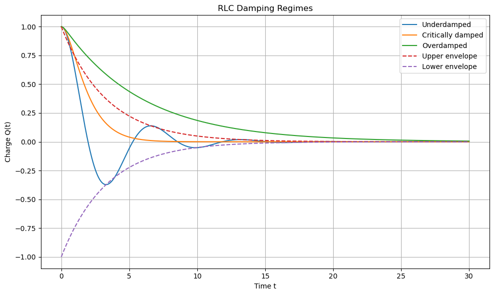
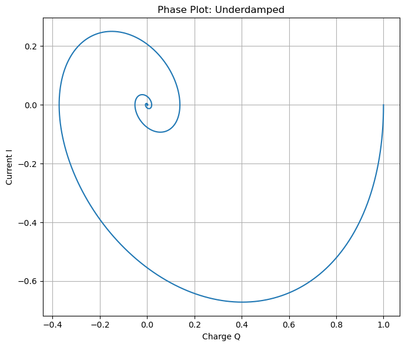
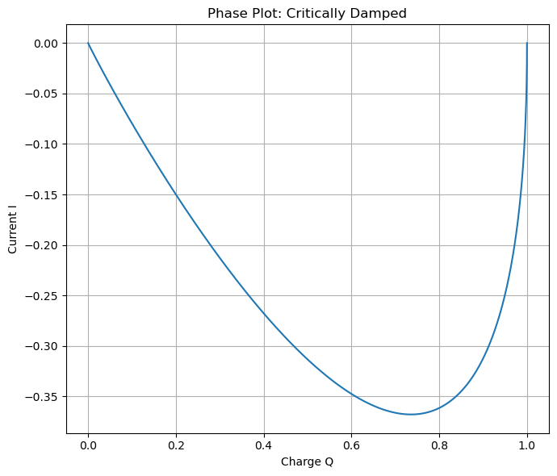
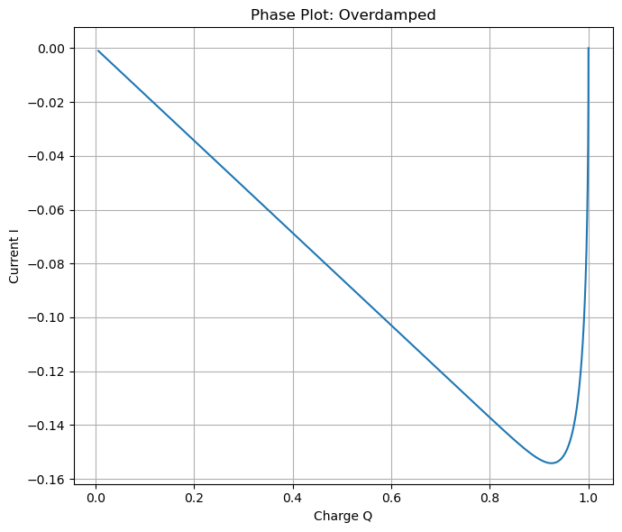

B7.8 Quantitative Analysis of Damping#
In the previous section, we described qualitatively how resistance affects oscillations.
We now develop a quantitative criterion that determines whether a system oscillates or not.
B7.8.1 The Governing Equation#
We begin by rewriting the RLC equation in a form that makes comparison to familiar systems clear.
Concept — The Governing Equation
For an RLC circuit:
Divide through by \(L\):
This has the same form as a damped oscillator:
where:
B7.8.2 Solving the Equation#
To determine the system behavior, we look for solutions of a standard exponential form.
Example — Characteristic Equation
Assume a solution of the form:
Substitute into the equation:
This is a quadratic equation:
👉 The nature of the solution depends on the term under the square root.
B7.8.3 Conditions for Different Regimes#
The behavior of the system is determined by the discriminant of the quadratic equation.
Concept — Condition for Different Regimes
Define:
Then:
Underdamped (oscillatory):
Oscillations occur with decreasing amplitude.
Critically damped:
System returns to equilibrium as fast as possible without oscillating.
Overdamped:
No oscillations; slow return to equilibrium.




Critical resistance: R_c = 2.0000
Chosen underdamped resistance: R = 0.6000
Chosen critically damped resistance: R = 2.0000
Chosen overdamped resistance: R = 6.0000
Natural angular frequency: omega_0 = 1.0000
Underdamped decay constant: gamma = 0.3000
Underdamped oscillation frequency: omega_d = 0.9539
Underdamped period: T_d = 6.5866
B7.8.4 Interpreting Phase Plots#
In addition to time-based graphs, we also showed an often useful to representation the behavior of an RLC circuit using a phase plot, where we graph:
Since current is related to charge by
each point on this plot represents the state of the system at a given instant:
\(Q\) tells us “where the system is”
\(I\) tells us “how it is changing”
As time progresses, the system traces out a trajectory in the \((Q, I)\) plane, called phase space.
What Phase Plots Show#
A phase plot does not explicitly show time. Instead, it shows:
The relationship between a variable and its rate of change
The overall structure of motion in a single curve
👉 This makes it possible to identify qualitative behavior immediately:
Oscillatory vs non-oscillatory motion
Fast vs slow return to equilibrium
Energy exchange between different forms
Underdamped Case — Spiral Toward the Origin#
For the underdamped case:
The system oscillates while gradually losing energy
In the phase plot:
The trajectory forms a spiral inward
Interpretation:
Each loop corresponds to one oscillation
The decreasing radius reflects energy dissipation
Motion alternates between:
Large \(Q\), small \(I\) → energy mostly electric
Small \(Q\), large \(I\) → energy mostly magnetic
👉 The spiral captures both oscillation and decay in a single picture.
Critically Damped Case — Direct Approach#
For the critically damped case:
The system returns to equilibrium without oscillating
It does so as quickly as possible
In the phase plot:
The trajectory moves directly toward the origin
There are no loops or spirals
Interpretation:
The system smoothly approaches equilibrium
There is no back-and-forth energy exchange
The path represents the optimal balance between inertia and damping
Overdamped Case — Slow Approach#
For the overdamped case:
The system does not oscillate
It returns to equilibrium more slowly
In the phase plot:
The trajectory approaches the origin gradually
It does not loop or spiral
Interpretation:
Strong damping suppresses motion
Energy is dissipated before oscillation can occur
The system is “over-restrained,” leading to slow evolution
Why Phase Plots Are Useful#
Phase plots provide a powerful way to understand system behavior:
They combine position and rate of change in one view
They clearly distinguish between:
Oscillatory motion (spirals)
Non-oscillatory motion (direct paths)
They visualize energy flow:
Horizontal extremes (large \(Q\)) → electric energy
Vertical extremes (large \(I\)) → magnetic energy
They reveal the global behavior of the system, not just snapshots in time
Key Insight#
A phase plot shows how the system moves through its possible states:
Instead of tracking motion as a function of time, we see the structure of the motion itself.
This perspective provides a deeper understanding of RLC circuits as dynamical systems, connecting circuit behavior to broader ideas used throughout physics.
B7.8.5 Interpreting the Damping Regimes#
Having established the mathematical conditions for each regime, we now interpret what these results mean physically.
Danger Zone — Interpreting the Critical Case
Critical damping is not about “maximum resistance.”
Too little resistance → oscillations
Too much resistance → slow response
👉 Critical damping is the exact balance point between oscillation and overdamping.
B7.8.6 Damped Oscillation Frequency#
When the system is underdamped, it still oscillates — but not at the natural frequency of the undamped system.
Example — Damped Oscillation Frequency
For the underdamped case, the oscillation frequency becomes:
where:
👉 Resistance reduces the oscillation frequency.
B7.8.7 Applying the Criteria#
We can now use the derived conditions to predict system behavior.
Box Activity 1 — Identifying Critical Resistance
Given \(L\) and \(C\), determine the resistance that produces critical damping.
Solution
Set:
Solving:
Box Activity 2 — Predicting Behavior
A circuit has:
Small \(R\)
Fixed \(L\) and \(C\)
Will the system oscillate?
How will increasing \(R\) change the behavior?
Solution
Yes — it is underdamped
Increasing \(R\) reduces oscillations and can eventually eliminate them
This section completes the transition from qualitative understanding to predictive analysis:
You can now determine exactly when a circuit will oscillate and how resistance controls its behavior.